| Test Dates | Question | Answer | Image |
|---|---|---|---|
| April 12th | A soul is composed of appetite, spirit, and what else? | Logic | N/A |
| April 19th | Is the line extending from A connected to B or C? Which is it? | C | 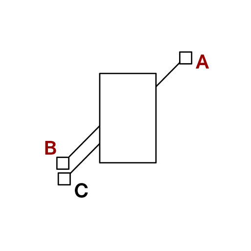 |
| April 23rd | What event did Emperor Nero add to the Olympics so he could participate? | Singing | N/A |
| April 25th |
Q1) What's the common usage of kakushinhan again, regarding an action you take? Q2) But the real kakushinhan is the opposite, right? So the opposite means... |
1) Knowing your actions are wrong 2) Conviction that you're right |
N/A |
| April 27th | How many colors does it take to paint every region without any two adjacent ones being the same color? | Four | 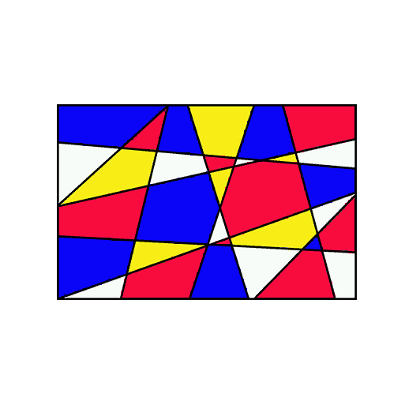 |
| April 30th |
Q1) First off, the "wunder" part probably means... Q2) Next, the "kind" part. That's probably... Q3) So a "wunderkind" would be.. |
1) Wonder 2) Child 3) A prodigy |
N/A |
| May 7th | What do people generally call a woman who has a charm that sometimes leads men to their doom? | A femme fatale | N/A |
| May 10th | Who do you think is the origin of the term "magistrate's patronage"? | Minamoto no Yoshitsune | 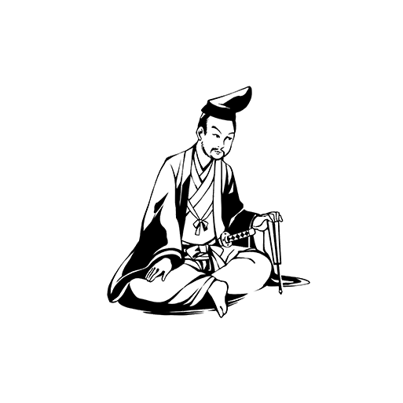 |
| May 11th: Exams Start |
Although the line connects A to C it looks like it leads to B instead. What is this phenomenon called? | An optical illusion | N/A |
| If how they're seeing things is different, it probably has to do with this sort of information... | Visual information | N/A | |
| What takes the visual information from your eyes and processes it is the, uh... | Brain | N/A | |
| The brain processes visual information. So, the reason why people see things differently is... | They have different cognitions | N/A | |
| Which of the following expressions came form the name of the position that Minamoto no Yoshitsune held? | Magistrate's patronage | N/A | |
| What is the origin of the English word "talent"? | The name of a sum of currency | N/A | |
| What did the Greek philosopher Socrates say that evil is born from? | Ignorance | N/A | |
| May 13th: Exams End |
What's the least number of colors needed to paint Japan so no two adjacent areas are the same color? | Four | N/A |
| May 16th | Do you know who created the piece which sold for the highest price back in the 20th century? | Van Gogh | N/A |
| May 21st | What is the name of this ratio that Japanese architects and artists have liked using? | The silver ratio | 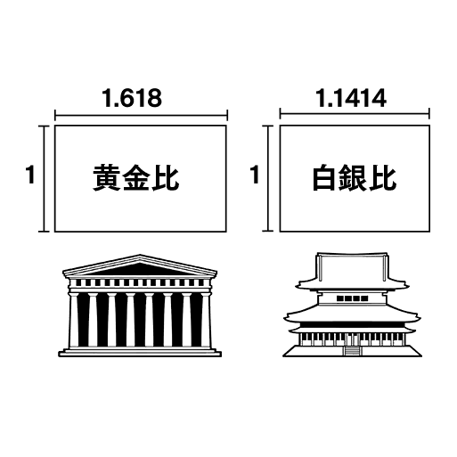 |
| May 23rd | Well, your number's up. The root words of synesthesia are "syn" and "aisthesis". What do they mean? | "Together" and "senses" | N/A |
| May 26th | What was the name of the other famous novel that Sherlock Holmes appeared in? | "Arsene Lupin, Gentleman Burglar" | N/A |
| May 30th | Who was the pirate who said that he hid his treasure in a certain place just before he was executed? | William Kidd | N/A |
| June 4th | The original blazers were named that thanks to a certain quality they had. Any idea what it was? | They were brightly colored. | N/A |
| June 7th | What are red king crabs most biologically related to? | Hermit crabs | |
| June 8th | With the advent of the color TV, something else started appearing in color. Do you know what it is? | Dreams | N/A |
| June 11th | Can you imagine how much gold has been excavated by humanity over the course of history? | Three Olympic-sized pools | N/A |
| June 13th | Paper money is issued by the Bank of Japan, but who issues the coins? | The government | N/A |
| June 15th | What would happen if you keep washing your hair with water that's contaminated with metal? | It'll change color | N/A |
| June 23rd | Who is this woman, drawn as the High Priestess in most tarot decks? | Pope Joan | 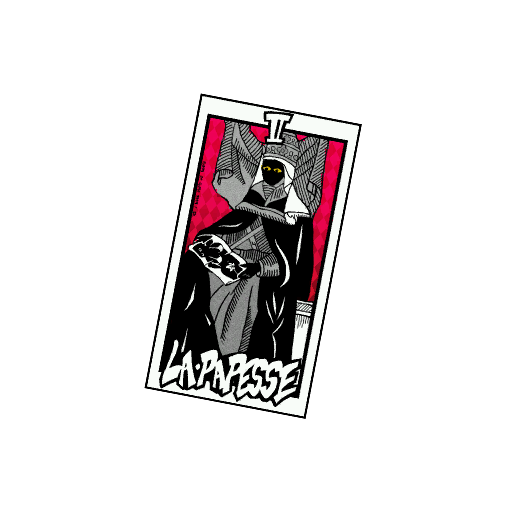 |
| June 27th | In English, what does the term "cat-and-dog weather" refer to? | Heavy rain | N/A |
| June 29th | This character is the cursive form of a specific kanji. Do you know which one it is? | Gold | |
| July 1st | ...But do you know what Chinese dish Zhuge Liang is credited for inventing? | Baozi | N/A |
| July 4th | Do you know the reason why July and August both have thirty-one days? | Someone pretentious said so | N/A |
| July 7th | What's the traditional food of Tanabata? | Soumen | N/A |
| July 8th | What's a common trait of almost all shaved-ice syrups on the market? | They have the same flavor | N/A |
| July 9th | What is the sum of angles a through e? | 180 degrees | 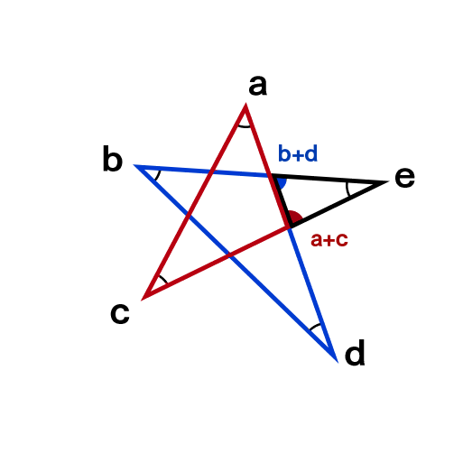 |
| July 11th | What is the name of the light-producing substance in fireflies? | Luciferin | N/A |
| July 12th | What was the name of the gentleman thief whose family was boiled alive during the Sengoku period? | Ishikawa Goemon | N/A |
| July 13th: Exams Start |
Which of these phrases has its origins in this shogi piece? | Nouveau riche | N/A |
| Goemon was popular because he wasn't just a thief, he was a... | Gentleman thief | N/A | |
| And the person in power who had it in for Goemon was... | Toyotomi Hideyoshi | N/A | |
| And, Gomeon's death after he got captured by Hideyoshi is famous too... | He was boiled alive | N/A | |
| Which of the following statements are true of this organism? | It's not related to crabs | N/A | |
| What is said to be the reason why people began dreaming in color? | Television | N/A | |
| Which of these was made using the silver ratio? | B4-size paper | N/A | |
| July 15th: Exams End |
Define "syn" and "aisthesis," the Greek root words of "synesthesia | "Together" and "senses" | N/A |
| Sept 3rd | In this famous statue, he's holding a spear in hist left hand, but what does he have in his right? | Nothing |  |
| Sept 6th | What is the name of the phenomenon where the second hand looks like it stops moving? | Chronostasis. | N/A |
| Sept 14th | Second-hand shops are also known as thrift stores. Do you know when the earliest ones appeared? | The 19th Century | N/A |
| Sept 17th | We have a saying in Japanese: a skilled hawk hides its talons. What hides its claws in English? | A cat | N/A |
| Sept 21st | The word "robot" didn't come from English. So, what country did it come from? | Czechoslovakia | N/A |
| Sept 24th | Black and white are the common colors for soccer balls. Do you know why they chose black and white? | So it shows up well on TV | |
| Sept 28th |
Q1) So "PVS", referring to when you mistakenly think your phone is going off... What's the P? Q2) The next part is the V part. That means it'd be "phantom..." what? Q3) Last is the S. So if we have "phantom vibration" so far... |
1) Phantom 2) Vibration 3) Syndrome |
N/A |
| Sept 29th | Not all civil servants work in government offices. Which of these occupations is a civil one? | Fishermen of Nagaragawa | N/A |
| Oct 3rd | ...but in the entire universe, which of these is closest to its density of stars? | Three watermelons in the sun. | N/A |
| Oct 6th | This device made mass executions possible. You know what it's called, yes? | A guillotine | 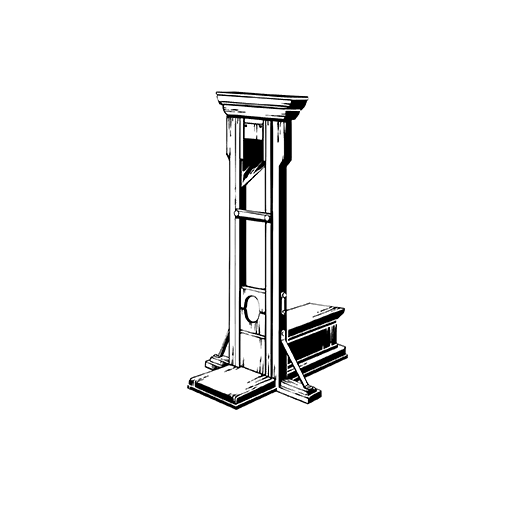 |
| Oct 11th | Which do you think most people choose to name "kiki"? | A | 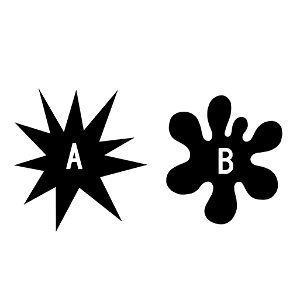 |
| Oct 17th: Exams Start |
What is the origin of the word "guillotine"? | Name of the one who proposed it | N/A |
| First of all, who proposed the idea of the guillotine? | A doctor | N/A | |
| So, from his perspective, what was the advantage of the guillotine? | It could execute people quickly | N/A | |
| Which of the following statements about this ball is true? | It has thirty-two faces | N/A | |
| What is the meaning of the word "robota", the Czech word that is the root word of "robot"? | Slave labor | N/A | |
| What is the English name for the phenomenon where it feels like your cell phone is vibrating? | Phantom Vibration Syndrome | N/A | |
| Oct 19th: Exams End |
Which of the following government organizations do the cormorant fishermen of Nagaragawa belong to? | The Imperial Household Agency | N/A |
| Oct 22nd | What number should be in the middle of this square to make it a magic square? | Five | 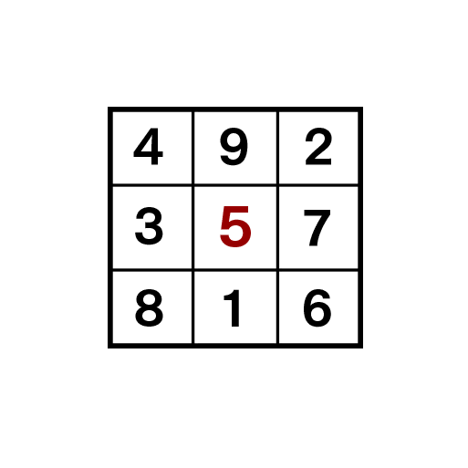 |
| Oct 24th | Can you tell me what the S in SOS means? | It's meaningles | N/A |
| Nov 2nd | The word "wack" was also used in a coded language form history. What was that language? | Thieves' Cant | N/A |
| Nov 4th | Clubs is a club, diamonds is a gem, spades is a sword... So, what is hearts? | The Holy Grail | 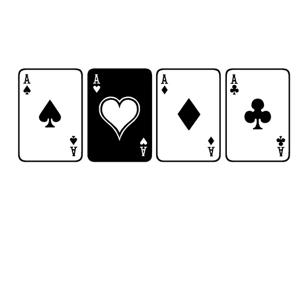 |
| Nov 8th | Do you know what age you have to be in order to listen in on a trial? | Zero | N/A |
| Nov 10th | Do you know what the line that's in "bird" but not in "crow" represents? | An eye | 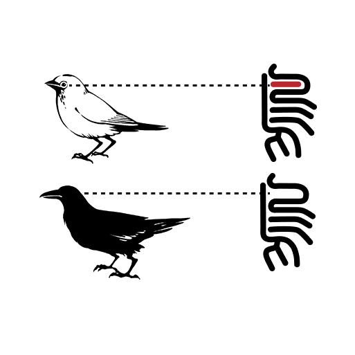 |
| Nov 12th | Do you know why hearing someone's voice over the phone sound different than their real voice? | It's heavily processed | N/A |
| Nov 15th | When he was executed, something was doen to his appearance, Do you know what it was? | They put makeup on him. | N/A |
| Nov 17th | Which of these is called a cochleoid, after its resemblance to a snail? | B | 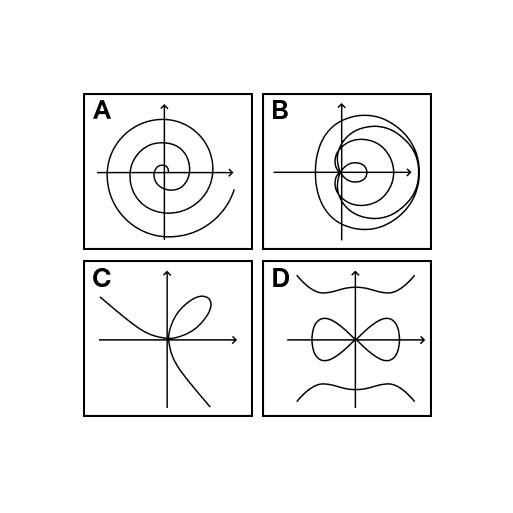 |
| Nov 18th | At which of these location can you see the sunrise the earliest? | The summit of Mt. Fuji | 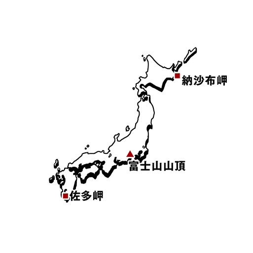 |
| Dec 20th: Exams Start |
Which of the following is called the Devil's curve? | D | N/A |
| I think they said the voice you hear through the phone is... | Not their real voice | N/A | |
| But why does the listener think the synthetic voice is the real person? | They speak the same | N/A | |
| Even if the voice is different, as long as they talk the same, the listener will subconsciously... | Supplement the voice | N/A | |
| Which suit of cards represents the Holy Grail | Hearts | N/A | |
| Which of the following is not true about the kanji for "crow"? | It includes a number | N/A | |
| Which country refers to a person who controls politics behind the scenes as a "prim minister in black"? | Japan | N/A | |
| Dec 22nd: Exams End |
What English word did the initial "do" in the Japanese "dokyuu", or massive, originate from? | Dreadnought | N/A |